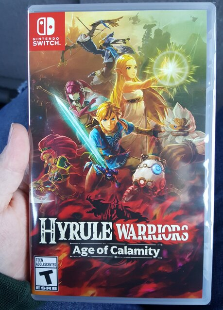

Welcome to Dewside
Log of Eliwood's Thoughts
12:55 pm; january 3, 2021 (sunday)
helloooo 2021!
i am trying to look at funny hahas on tomblr but it keeps crashing :(
10:02 pm; december 29, 2020 (sunday)
i am trying to learn unity
turns out, i suck at using unity
grrr why can't i be immediately good at it
in other news, i love my best friend. bon, if you're reading this, marry me
testing out a "like button" atm. we'll see if it works in a sec...
added! it can now be found on the home page
1:16 pm; december 27, 2020 (sunday)
sorry for going off without warning! it's been a busy holiday, and without school there's not as much of an excuse for me to use when my parents ask why i'm on my laptop :(. i'll show them this website someday, because i'm very proud of it, but i'm 1. still in the closet, and 2. they don't really like me to interact or use the internet all that much. someday, though, everything will work out.
1:10 pm; december 21, 2020 (monday)
[taken down, sorry!]
merry almost-crimas :)
taken down for the night! come back tomorrow!
9:38 pm; december 17, 2020 (thursday)
i love recieving mail from my loyal followers
10:17 pm; december 15, 2020 (tuesday)
hello i'm feeling better today
a cool and sexy fact about me is that i run a successful liminalcore blog on a certain hellsite. this is my most popular photo:
why are these such a hit
anyways... i'll probably make a gallery of these here as well.
11:05 am; december 14, 2020 (monday)
today my school's schedule is all messed up. i hate it here. i should be HOME by now but instead i'm sitting here surrounded by juniors.
[rant removed on later date]
i'm not sure why i'm putting this here, either. i guess it feels nice to put things out into the void. this was supposed to be a post about how i kinda want to be a park ranger lmao
9:22 pm; december 9, 2020 (wednesday)
saw this video today. i'll be thinking about it for a long time
2:10 pm; december 8, 2020 (tuesday)
look, i love all ghibli movies, and i have very extensive thoughts on most of them. spirited away is a wonder, howl's moving castle is a charming delight, and princess mononoke is a masterpiece of film.

but there's something about the studio's 1995 hidden gem, whisper of the heart that just... hits different.
it's a low-key and soft coming-of-age film about a girl discovering her place in the world. it centers on creativity, exploration, and romance, and something about it all just touches a little spot within my soul, something raw and so real to me.
1:44 pm; december 8, 2020 (tuesday)
i have work later and i'm procrastinating on an assignment right now. help.
i should probably write out a list of pages i want to create... but i also need to finish the pages i've started. this is my life
10:17 pm; december 7, 2020 (monday)
i had a nice day today :)
6:08 pm; december 5, 2020 (saturday)
thoughts on the new timestamp border? i'm expanding my horizons.
had to deal with morons at work today. regretting ever switching to a retail job; luckily i'm just a holiday temp.
i am once again feeling emotions over chrobin. can you blame me, though????? just look at all this bomb art i've seen lately (click for sources B):


 filed under: things that make me go buck wild
filed under: things that make me go buck wild
9:07 pm; december 3, 2020 (thursday)
I JUST FINISHED THE OWL HOUSE
HHHHHHHHHHHHHHHHHHHHHOOOOOOOOOOOOOOOO
OOOOOOOOOOOOOOOOOOOOOOOOOOOOO BOY
WOW
3:58 pm; november 30, 2020 (monday)
i blame bon for my recently renewed interest in the furry fandom-- her morbid curiosty pairs well with my genuine interest. i got into it at age 13, but have really mellowed out, in my opinion. i don't really bring it up to people unprompted, but i love anthros and the way fursuits move is just,, kinda really cool to me?? i adore digitigrade legs. who knows why.
anyways, maybe i'll make a page just devoted to this stuff? idk i also mave other pages i am procrastinating on finishing
video source: wolvinny on twitter. this is my first time ever using the "video" html tag! how could i not, with a vid so perfectly combining coco the corgi with a hatsune miku song??
9:32 am; november 30, 2020 (monday)

my friend bullies me very lovingly for liking fursuits. this is my curse
5:35 pm; november 28, 2020 (saturday)
it's really been a whole week already? i've been too busy.
through a recent stroke of luck, i was able to buy an animal crossing switch! i love it so much. i've been playing through age of clam, and it SLAPS as a game. i don't have facebook or twitter, so i can't export my screenshots, but here are some low quality pics of them!

the game is very fun, and made me fall for not only impa, but zelda as well. i love them both!!
3:50 pm; november 21, 2020 (saturday)
guess what i got sexies

and look what came with it!
it's egg!